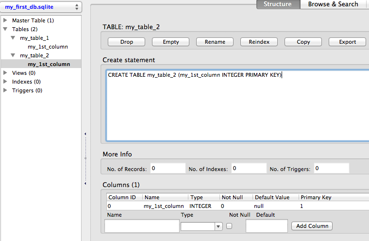
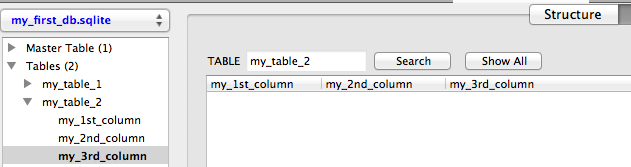
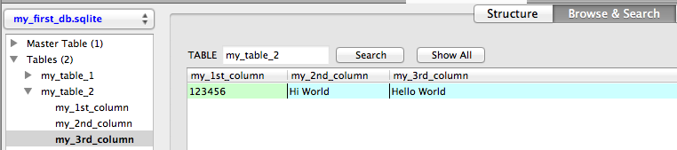
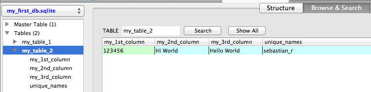
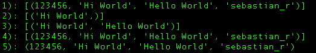
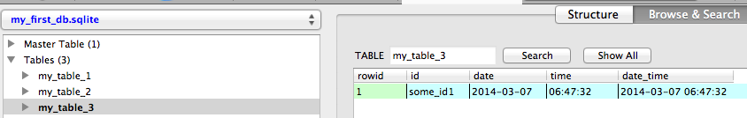
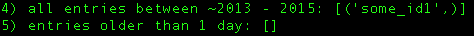
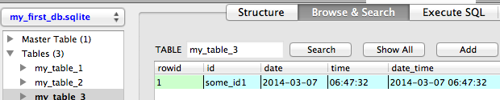
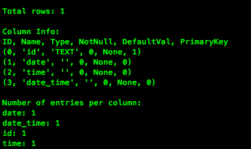

A thorough guide to SQLite database operations in Python
-- written by Sebastian Raschka on March 7, 2014
TweetAfter I wrote the initial teaser article "SQLite - Working with large data sets in Python effectively" about how awesome SQLite databases are via sqlite3 in Python, I wanted to delve a little bit more into the SQLite syntax and provide you with some more hands-on examples.

Sections
• Connecting to an SQLite database
• Creating a new SQLite database
- Overview of SQLite data types
- A quick word on PRIMARY KEYS:
• Adding new columns
• Inserting and updating rows
• Creating unique indexes
• Querying the database - Selecting rows
• Security and injection attacks
• Date and time operations
• Printing a database summary
• Conclusion
Connecting to an SQLite database
The sqlite3 that we will be using throughout this tutorial is part of the Python Standard Library and is a nice and easy interface to SQLite databases: There are no server processes involved, no configurations required, and no other obstacles we have to worry about.
In general, the only thing that needs to be done before we can perform any operation on a SQLite database via Python's sqlite3 module, is to open a connection to an SQLite database file:
import sqlite3 conn = sqlite3.connect(sqlite_file) c = conn.cursor()
where the database file (sqlite_file) can reside anywhere on our disk, e.g.,
sqlite_file = '/Users/Sebastian/Desktop/my_db.sqlite'
Conveniently, a new database file (.sqlite file) will be created automatically the first time we try to connect to a database. However, we have to be aware that it won't have a table, yet. In the following section, we will take a look at some example code of how to create a new SQLite database files with tables for storing some data.
To round up this section about connecting to a SQLite database file, there are two more operations that are worth mentioning.
If we are finished with our operations on the database file, we have to close the connection via the .close() method:
conn.close()
And if we performed any operation on the database other than sending queries, we need to commit those changes via the .commit() method before we close the connection:
conn.commit() conn.close()
Creating a new SQLite database
Let us have a look at some example code to create a new SQLite database file with two tables: One with and one without a PRIMARY KEY column (don't worry, there is more information about PRIMARY KEYs further down in this section).
mport sqlite3 sqlite_file = 'my_first_db.sqlite' # name of the sqlite database file table_name1 = 'my_table_1' # name of the table to be created table_name2 = 'my_table_2' # name of the table to be created new_field = 'my_1st_column' # name of the column field_type = 'INTEGER' # column data type # Connecting to the database file conn = sqlite3.connect(sqlite_file) c = conn.cursor() # Creating a new SQLite table with 1 column c.execute('CREATE TABLE {tn} ({nf} {ft})'\ .format(tn=table_name1, nf=new_field, ft=field_type)) # Creating a second table with 1 column and set it as PRIMARY KEY # note that PRIMARY KEY column must consist of unique values! c.execute('CREATE TABLE {tn} ({nf} {ft} PRIMARY KEY)'\ .format(tn=table_name2, nf=new_field, ft=field_type)) # Committing changes and closing the connection to the database file conn.commit() conn.close()
Download the script: create_new_db.py
Tip: A handy tool to visualize and access SQLite databases is the free FireFox SQLite Manager add-on. Throughout this article, I will use this tool to provide screenshots of the database structures that we created below the corresponding code sections.

Using the code above, we created a new .sqlite database file with 2 tables. Each table consists of currently one column only, which is of type INTEGER.
Here is a quick overview of all data types that are supported by SQLite 3:
- INTEGER: A signed integer up to 8 bytes depending on the magnitude of the value.
- REAL: An 8-byte floating point value.
- TEXT: A text string, typically UTF-8 encoded (depending on the database encoding).
- BLOB: A blob of data (binary large object) for storing binary data.
- NULL: A NULL value, represents missing data or an empty cell.
Looking at the table above, You might have noticed that SQLite 3 has no designated Boolean data type. However, this should not be an issue, since we could simply re-purpose the INTEGER type to represent Boolean values (0 = false, 1 = true).
A quick word on PRIMARY KEYS:
In our example code above, we set our 1 column in the second table to PRIMARY KEY. The advantage of a PRIMARY KEY index is a significant performance gain if we use the PRIMARY KEY column as query for accessing rows in the table. Every table can only have max. 1 PRIMARY KEY (single or multiple column(s)), and the values in this column MUST be unique! But more on column indexing in the a later section.
Adding new columns
If we want to add a new column to an existing SQLite database table, we can either leave the cells for each row empty (NULL value), or we can set a default value for each cell, which is pretty convenient for certain applications.
Let's have a look at some code:
import sqlite3 sqlite_file = 'my_first_db.sqlite' # name of the sqlite database file table_name = 'my_table_2' # name of the table to be created id_column = 'my_1st_column' # name of the PRIMARY KEY column new_column1 = 'my_2nd_column' # name of the new column new_column2 = 'my_3nd_column' # name of the new column column_type = 'TEXT' # E.g., INTEGER, TEXT, NULL, REAL, BLOB default_val = 'Hello World' # a default value for the new column rows # Connecting to the database file conn = sqlite3.connect(sqlite_file) c = conn.cursor() # A) Adding a new column without a row value c.execute("ALTER TABLE {tn} ADD COLUMN '{cn}' {ct}"\ .format(tn=table_name, cn=new_column1, ct=column_type)) # B) Adding a new column with a default row value c.execute("ALTER TABLE {tn} ADD COLUMN '{cn}' {ct} DEFAULT '{df}'"\ .format(tn=table_name, cn=new_column2, ct=column_type, df=default_val)) # Committing changes and closing the connection to the database file conn.commit() conn.close()
Download the script: add_new_column.py

We just added 2 more columns (my_2nd_column and my_3rd_column) to my_table_2 of our SQLite database next to the PRIMARY KEY column my_1st_column.
The difference between the two new columns is that we initialized my_3rd_column with a default value (here:'Hello World'), which will be inserted for every existing cell under this column and for every new row that we are going to add to the table if we don't insert or update it with a different value.
Inserting and updating rows
Inserting and updating rows into an existing SQLite database table - next to sending queries - is probably the most common database operation. The Structured Query Language has a convenient UPSERT function, which is basically just a merge between UPDATE and INSERT: It inserts new rows into a database table with a value for the PRIMARY KEY column if it does not exist yet, or updates a row for an existing PRIMARY KEY value.
Unfortunately, this convenient syntax is not supported by the more compact SQLite database implementation that we are using here. However, there are some workarounds. But let us first have a look at the example code:
import sqlite3 sqlite_file = 'my_first_db.sqlite' table_name = 'my_table_2' id_column = 'my_1st_column' column_name = 'my_2nd_column' # Connecting to the database file conn = sqlite3.connect(sqlite_file) c = conn.cursor() # A) Inserts an ID with a specific value in a second column try: c.execute("INSERT INTO {tn} ({idf}, {cn}) VALUES (123456, 'test')".\ format(tn=table_name, idf=id_column, cn=column_name)) except sqlite3.IntegrityError: print('ERROR: ID already exists in PRIMARY KEY column {}'.format(id_column)) # B) Tries to insert an ID (if it does not exist yet) # with a specific value in a second column c.execute("INSERT OR IGNORE INTO {tn} ({idf}, {cn}) VALUES (123456, 'test')".\ format(tn=table_name, idf=id_column, cn=column_name)) # C) Updates the newly inserted or pre-existing entry c.execute("UPDATE {tn} SET {cn}=('Hi World') WHERE {idf}=(123456)".\ format(tn=table_name, cn=column_name, idf=id_column)) conn.commit() conn.close()
Download the script: update_or_insert_records.py

Both A) INSERT and B) INSERT OR IGNORE have in common that they append new rows to the database if a given PRIMARY KEY does not exist in the database table, yet. However, if we'd try to append a PRIMARY KEY value that is not unique, a simple INSERT would raise an sqlite3.IntegrityError exception, which can be either captured via a try-except statement (case A) or circumvented by the SQLite call INSERT OR IGNORE (case B).
This can be pretty useful if we want to construct an UPSERT equivalent in SQLite. E.g., if we want to add a dataset to an existing database table that contains a mix between existing and new IDs for our PRIMARY KEY column.
Creating unique indexes
Just like hashtable-datastructures, indexes function as direct pointers to our data in a table for a particular column (i.e., the indexed column). For example, the PRIMARY KEY column would have such an index by default. The downside of indexes is that every row value in the column must be unique. However, it is recommended and pretty useful to index certain columns if possible, since it rewards us with a significant performance gain for the data retrieval.
The example code below shows how to add such an unique index to an existing column in an SQLite database table. And if we should decide to insert non-unique values into a indexed column later, there is also a convenient way to drop the index, which is also shown in the code below.
import sqlite3 sqlite_file = 'my_first_db.sqlite' # name of the sqlite database file table_name = 'my_table_2' # name of the table to be created id_column = 'my_1st_column' # name of the PRIMARY KEY column new_column = 'unique_names' # name of the new column column_type = 'TEXT' # E.g., INTEGER, TEXT, NULL, REAL, BLOB index_name = 'my_unique_index' # name for the new unique index # Connecting to the database file conn = sqlite3.connect(sqlite_file) c = conn.cursor() # Adding a new column and update some record c.execute("ALTER TABLE {tn} ADD COLUMN '{cn}' {ct}"\ .format(tn=table_name, cn=new_column, ct=column_type)) c.execute("UPDATE {tn} SET {cn}='sebastian_r' WHERE {idf}=123456".\ format(tn=table_name, idf=id_column, cn=new_column)) # Creating an unique index c.execute('CREATE INDEX {ix} on {tn}({cn})'\ .format(ix=index_name, tn=table_name, cn=new_column)) # Dropping the unique index # E.g., to avoid future conflicts with update/insert functions c.execute('DROP INDEX {ix}'.format(ix=index_name)) # Committing changes and closing the connection to the database file conn.commit() conn.close()
Download the script: create_unique_index.py

Querying the database - Selecting rows
After we learned about how to create and modify SQLite databases, it's about time for some data retrieval. The code below illustrates how we can retrieve row entries for all or some columns if they match certain criteria.
import sqlite3 sqlite_file = 'my_first_db.sqlite' # name of the sqlite database file table_name = 'my_table_2' # name of the table to be queried id_column = 'my_1st_column' some_id = 123456 column_2 = 'my_2nd_column' column_3 = 'my_3rd_column' # Connecting to the database file conn = sqlite3.connect(sqlite_file) c = conn.cursor() # 1) Contents of all columns for row that match a certain value in 1 column c.execute('SELECT * FROM {tn} WHERE {cn}="Hi World"'.\ format(tn=table_name, cn=column_2)) all_rows = c.fetchall() print('1):', all_rows) # 2) Value of a particular column for rows that match a certain value in column_1 c.execute('SELECT ({coi}) FROM {tn} WHERE {cn}="Hi World"'.\ format(coi=column_2, tn=table_name, cn=column_2)) all_rows = c.fetchall() print('2):', all_rows) # 3) Value of 2 particular columns for rows that match a certain value in 1 column c.execute('SELECT {coi1},{coi2} FROM {tn} WHERE {coi1}="Hi World"'.\ format(coi1=column_2, coi2=column_3, tn=table_name, cn=column_2)) all_rows = c.fetchall() print('3):', all_rows) # 4) Selecting only up to 10 rows that match a certain value in 1 column c.execute('SELECT * FROM {tn} WHERE {cn}="Hi World" LIMIT 10'.\ format(tn=table_name, cn=column_2)) ten_rows = c.fetchall() print('4):', ten_rows) # 5) Check if a certain ID exists and print its column contents c.execute("SELECT * FROM {tn} WHERE {idf}={my_id}".\ format(tn=table_name, cn=column_2, idf=id_column, my_id=some_id)) id_exists = c.fetchone() if id_exists: print('5): {}'.format(id_exists)) else: print('5): {} does not exist'.format(some_id)) # Closing the connection to the database file conn.close()
Download the script: selecting_entries.py
if we use the .fetchall() method, we return a list of tuples from the database query, where each tuple represents one row entry. The print output for the 5 different cases shown in the code above would look like this (note that we only have a table with 1 row here):

Security and injection attacks
So far, we have been using Python's string formatting method to insert parameters like table and column names into the c.execute() functions. This is fine if we just want to use the database for ourselves. However, this leaves our database vulnerable to injection attacks. For example, if our database would be part of a web application, it would allow hackers to directly communicate with the database in order to bypass login and password verification and steal data.
In order to prevent this, it is recommended to use ? place holders in the SQLite commands instead of the % formatting expression or the .format() method, which we have been using in this tutorial.
For example, instead of using
# 5) Check if a certain ID exists and print its column contents c.execute("SELECT * FROM {tn} WHERE {idf}={my_id}".\ format(tn=table_name, cn=column_2, idf=id_column, my_id=some_id))
in the Querying the database - Selecting rows section above, we would want to use the ? placeholder for the queried column value and include the variable(s) (here: 123456), which we want to insert, as tuple at the end of the c.execute() string.
# 5) Check if a certain ID exists and print its column contents c.execute("SELECT * FROM {tn} WHERE {idf}=?".\ format(tn=table_name, cn=column_2, idf=id_column), (123456,))
However, the problem with this approach is that it would only work for values, not for column or table names. So what are we supposed to do with the rest of the string if we want to protect ourselves from injection attacks? The easy solution would be to refrain from using variables in SQLite queries whenever possible, and if it cannot be avoided, we would want to use a function that strips all non-alphanumerical characters from the stored content of the variable, e.g.,
def clean_name(some_var): return ''.join(char for char in some_var if char.isalnum())
Date and time operations
SQLite inherited the convenient date and time operations from SQL, which are one of my favorite features of the Structured Query Language: It does not only allow us to insert dates and times in various different formats, but we can also perform simple + and - arithmetic, for example to look up entries that have been added xxx days ago.
import sqlite3 sqlite_file = 'my_first_db.sqlite' # name of the sqlite database file table_name = 'my_table_3' # name of the table to be created id_field = 'id' # name of the ID column date_col = 'date' # name of the date column time_col = 'time'# name of the time column date_time_col = 'date_time' # name of the date & time column field_type = 'TEXT' # column data type # Connecting to the database file conn = sqlite3.connect(sqlite_file) c = conn.cursor() # Creating a new SQLite table with 1 column c.execute('CREATE TABLE {tn} ({fn} {ft} PRIMARY KEY)'\ .format(tn=table_name, fn=id_field, ft=field_type)) # A) Adding a new column to save date insert a row with the current date # in the following format: YYYY-MM-DD # e.g., 2014-03-06 c.execute("ALTER TABLE {tn} ADD COLUMN '{cn}'"\ .format(tn=table_name, cn=date_col)) # insert a new row with the current date and time, e.g., 2014-03-06 c.execute("INSERT INTO {tn} ({idf}, {cn}) VALUES('some_id1', DATE('now'))"\ .format(tn=table_name, idf=id_field, cn=date_col)) # B) Adding a new column to save date and time and update with the current time # in the following format: HH:MM:SS # e.g., 16:26:37 c.execute("ALTER TABLE {tn} ADD COLUMN '{cn}'"\ .format(tn=table_name, cn=time_col)) # update row for the new current date and time column, e.g., 2014-03-06 16:26:37 c.execute("UPDATE {tn} SET {cn}=TIME('now') WHERE {idf}='some_id1'"\ .format(tn=table_name, idf=id_field, cn=time_col)) # C) Adding a new column to save date and time and update with current date-time # in the following format: YYYY-MM-DD HH:MM:SS # e.g., 2014-03-06 16:26:37 c.execute("ALTER TABLE {tn} ADD COLUMN '{cn}'"\ .format(tn=table_name, cn=date_time_col)) # update row for the new current date and time column, e.g., 2014-03-06 16:26:37 c.execute("UPDATE {tn} SET {cn}=(CURRENT_TIMESTAMP) WHERE {idf}='some_id1'"\ .format(tn=table_name, idf=id_field, cn=date_time_col)) # The database should now look like this: # id date time date_time # "some_id1" "2014-03-06" "16:42:30" "2014-03-06 16:42:30" # 4) Retrieve all IDs of entries between 2 date_times c.execute("SELECT {idf} FROM {tn} WHERE {cn} BETWEEN '2013-03-06 10:10:10' AND '2015-03-06 10:10:10'".\ format(idf=id_field, tn=table_name, cn=date_time_col)) all_date_times = c.fetchall() print('4) all entries between ~2013 - 2015:', all_date_times) # 5) Retrieve all IDs of entries between that are older than 1 day and 12 hrs c.execute("SELECT {idf} FROM {tn} WHERE DATE('now') - {dc} >= 1 AND DATE('now') - {tc} >= 12".\ format(idf=id_field, tn=table_name, dc=date_col, tc=time_col)) all_1day12hrs_entries = c.fetchall() print('5) entries older than 1 day:', all_1day12hrs_entries) # Committing changes and closing the connection to the database file conn.commit() conn.close()
Download the script: date_time_ops.py

Some of the really convenient functions that return the current time and date are:
DATE('now') # returns current date, e.g., 2014-03-06 TIME('now') # returns current time, e.g., 10:10:10 CURRENT_TIMESTAMP # returns current date and time, e.g., 2014-03-06 16:42:30 # (or alternatively: DATETIME('now'))
The screenshot below shows the print outputs of the code that we used to query for entries that lie between a specified date interval using
BETWEEN '2013-03-06 10:10:10' AND '2015-03-06 10:10:10'
and entries that are older than 1 day via
WHERE DATE('now') - some_date
Note that we don't have to provide the complete time stamps here, the same syntax applies to simple dates or simple times only, too.

Update Mar 16, 2014:
If'd we are interested to calulate the hours between two
DATETIME() timestamps, we can could use the handy STRFTIME() function like this SELECT (STRFTIME('%s','2014-03-14 14:51:00') - STRFTIME('%s','2014-03-16 14:51:00'))
/ -3600
which would calculate the difference in hours between two dates in this particular example above (here:
48) in this case.
And to calculate the difference in hours between the current
DATETIME and a given DATETIME string, we could use the following SQLite syntax:
SELECT (STRFTIME('%s',DATETIME('now')) - STRFTIME('%s','2014-03-15 14:51:00')) / 3600
Retrieving column names
In the previous two sections we have seen how we query SQLite databases for data contents. Now let us have a look at how we retrieve its metadata (here: column names):
import sqlite3 sqlite_file = 'my_first_db.sqlite' table_name = 'my_table_3' # Connecting to the database file conn = sqlite3.connect(sqlite_file) c = conn.cursor() # Retrieve column information # Every column will be represented by a tuple with the following attributes: # (id, name, type, notnull, default_value, primary_key) c.execute('PRAGMA TABLE_INFO({})'.format(table_name)) # collect names in a list names = [tup[1] for tup in c.fetchall()] print(names) # e.g., ['id', 'date', 'time', 'date_time'] # Closing the connection to the database file conn.close()
Download the script: get_columnnames.py

Since we haven't created a PRIMARY KEY column for my_table_3, SQLite automatically provides an indexed rowid column with unique ascending integer values, which will be ignored in our case.
Using the PRAGMA TABLE_INFO() function on our table, we return a list of tuples, where each tuple contains the following information about every column in the table: (id, name, type, notnull, default_value, primary_key).
So, in order to get the names of every column in our table, we only have to grab the 2nd value in each tuple of the returned list, which can be done by
names = [tup[1] for tup in c.fetchall()]after the
PRAGMA TABLE_INFO() call. If we would print the contents of the variable names now, the output would look like this:
Printing a database summary
I hope we covered most of the basics about SQLite database operations in the previous sections, and by now we should be well equipped to get some serious work done using SQLite in Python.
Let me conclude this tutorial with an obligatory "last but not least" and a convenient script to print a nice overview of SQLite database tables:
import sqlite3 def connect(sqlite_file): """ Make connection to an SQLite database file """ conn = sqlite3.connect(sqlite_file) c = conn.cursor() return conn, c def close(conn): """ Commit changes and close connection to the database """ # conn.commit() conn.close() def total_rows(cursor, table_name, print_out=False): """ Returns the total number of rows in the database """ c.execute('SELECT COUNT(*) FROM {}'.format(table_name)) count = c.fetchall() if print_out: print('\nTotal rows: {}'.format(count[0][0])) return count[0][0] def table_col_info(cursor, table_name, print_out=False): """ Returns a list of tuples with column informations: (id, name, type, notnull, default_value, primary_key) """ c.execute('PRAGMA TABLE_INFO({})'.format(table_name)) info = c.fetchall() if print_out: print("\nColumn Info:\nID, Name, Type, NotNull, DefaultVal, PrimaryKey") for col in info: print(col) return info def values_in_col(cursor, table_name, print_out=True): """ Returns a dictionary with columns as keys and the number of not-null entries as associated values. """ c.execute('PRAGMA TABLE_INFO({})'.format(table_name)) info = c.fetchall() col_dict = dict() for col in info: col_dict[col[1]] = 0 for col in col_dict: c.execute('SELECT ({0}) FROM {1} WHERE {0} IS NOT NULL'.format(col, table_name)) # In my case this approach resulted in a better performance than using COUNT number_rows = len(c.fetchall()) col_dict[col] = number_rows if print_out: print("\nNumber of entries per column:") for i in col_dict.items(): print('{}: {}'.format(i[0], i[1])) return col_dict if __name__ == '__main__': sqlite_file = 'my_first_db.sqlite' table_name = 'my_table_3' conn, c = connect(sqlite_file) total_rows(c, table_name, print_out=True) table_col_info(c, table_name, print_out=True) values_in_col(c, table_name, print_out=True) # slow on large data bases close(conn)
Download the script: print_db_info.py


Conclusion
I really hope this tutorial was helpful to you to get started with SQLite database operations via Python. I have been using the sqlite3 module a lot recently, and it has found its way into most of my programs for larger data analyses.
Currently, I am working on a novel drug screening software that requires me to store 3D structures and other functional data for ~13 million chemical compounds, and SQLite has been an invaluable part of my program to quickly store, query, analyze, and share my data.
Another smaller project that uses sqlite3 in Python would be the twitter-follow-bot2, if you are interested, you can check it out at: https://github.com/rasbt/twitter-follow-bot2.
If you have any suggestions or questions, please don't hesitate to write me an
email or leave a comment in the comment section below! I am looking forward to your opinions and ideas, and I hope I can improve and extend this tutorial in future.